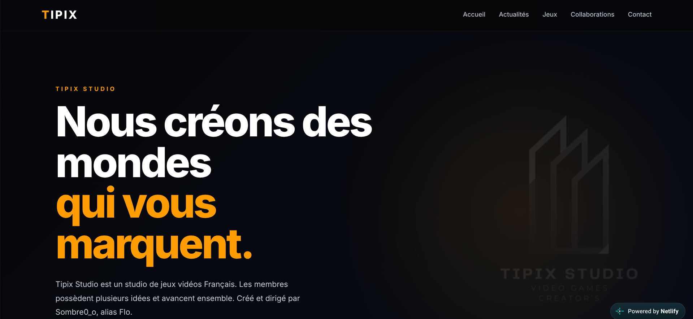

Tipix Studio
Le studio de création de jeux vidéos de mon ami Flo ! Allez le visiter et si possible follow sa chaine sur Whatapps ^^

Présentation
Tipix Studio est un studio de jeux vidéos Français. Les membres possèdent plusieurs idées et avancent ensemble. Créé et dirigé par Sombre0_o, alias Flo.